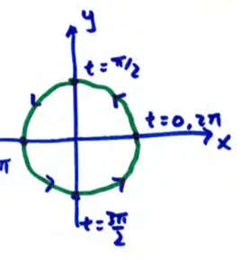
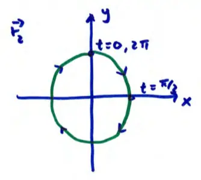

14.3 Motions in space (continued)
\(\vec{r}_1(t) = \langle \cos t, \sin t \rangle \quad 0 \le t \le 2\pi\)
\(\vec{r}_2(t) = \langle \sin t, \cos t \rangle \quad 0 \le t \le 2\pi\)
shape? circle
note for \(\vec{r}_1\), \(x(t) = \cos t\), \(y(t) = \sin t\) \(\cos^2 t + \sin^2 t = 1 \rightarrow x^2 + y^2 = 1\) (circle radius 1)
note for \(\vec{r}_2\), \(x(t) = \sin t\), \(y(t) = \cos t\) \(\cos^2 t + \sin^2 t = 1 \rightarrow y^2 + x^2 = 1\)

